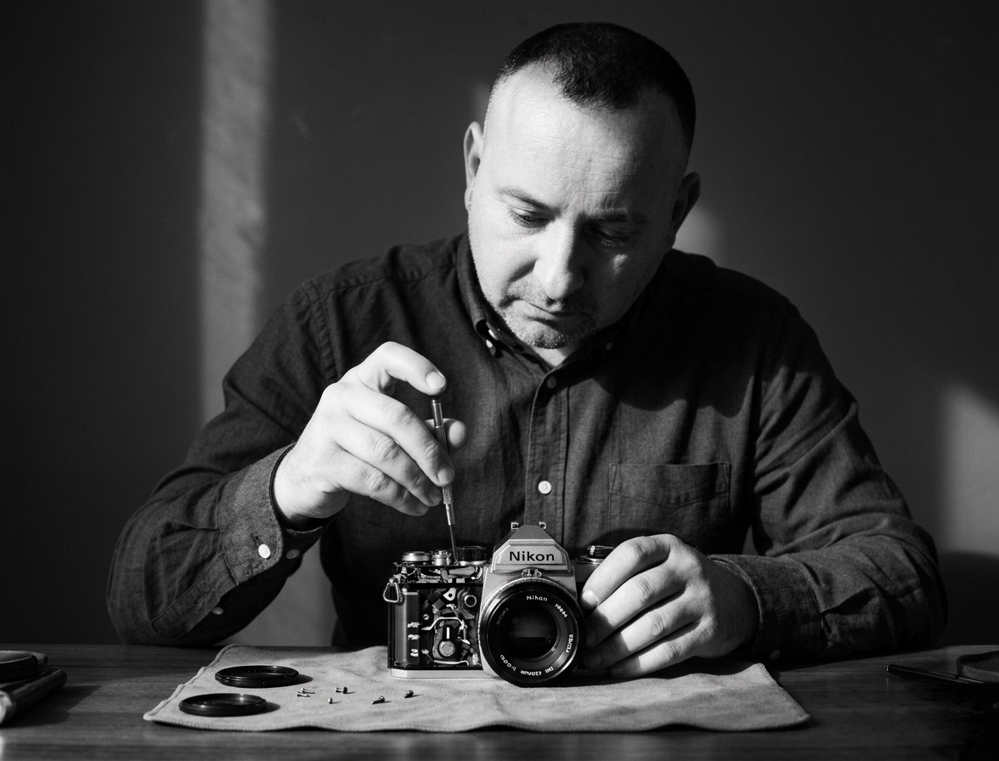

Od fotografije za putovnicu do role filma koju ste upravo ispucali. Ovo su usluge koje Foto Lido radi u studiju u starom gradu Zadra.
Fotografije za dokumente
Fotografije za sve vrste osobnih dokumenata, uz express uslugu: od snimanja do gotove fotografije prođe oko dvije minute. Passport, visa and boat licence photos – 2 min express.
Osobna iskaznica
Fotografije za osobne dokumente.
Putovnica
Passport photos.
Vize
Visa photos.
Brodarska dozvola
Boat licence photos.
Analogni film i razvijanje
 Na polici
Na policiFoto Lido prodaje 35 mm filmove u boji i razvija ih. U studiju je tamna komora, a film u boji razvija se u C-41 procesu.
Filmovi viđeni na polici studija; dostupnost se mijenja, pa prije dolaska provjerite telefonom.
Kupite film
Rolu 35 mm filma u boji možete kupiti u studiju.
Snimite
Ispucajte rolu – u starom gradu, na otocima, na obiteljskom ručku.
Donesite na razvijanje
Film se razvija u C-41 procesu. Za rok i cijenu pitajte u studiju.
Preuzmite
Razvijeni film preuzimate u Varoškoj 4, u radno vrijeme.
Uz filmove u ponudi su i optički filtri Kenko.
Čišćenje senzora
Tamne mrlje koje se ponavljaju na istom mjestu na svakoj fotografiji najčešće su prašina na senzoru. U Foto Lidu senzor digitalnog fotoaparata očiste u studiju.
Donesite aparat
Svratite u radno vrijeme ili se prije javite na 098 843 251.
Opišite problem
Recite što primjećujete na fotografijama – mrlje, prašinu, nešto drugo.

Radni stol · Foto LidoIzrada fotografija
Fotografije s mobitela, memorijske kartice ili razvijenog filma izrađuju se na papiru. Za formate, količine i rok javite se telefonom ili pošaljite upit.
Profesionalno fotografiranje po dogovoru – javite se studiju i dogovorite termin.
Niste sigurni što vam treba?
Nazovite ili svratite u Varošku 4. Pon – pet 9 – 13 i 18 – 20 h, sub 9 – 13 h.